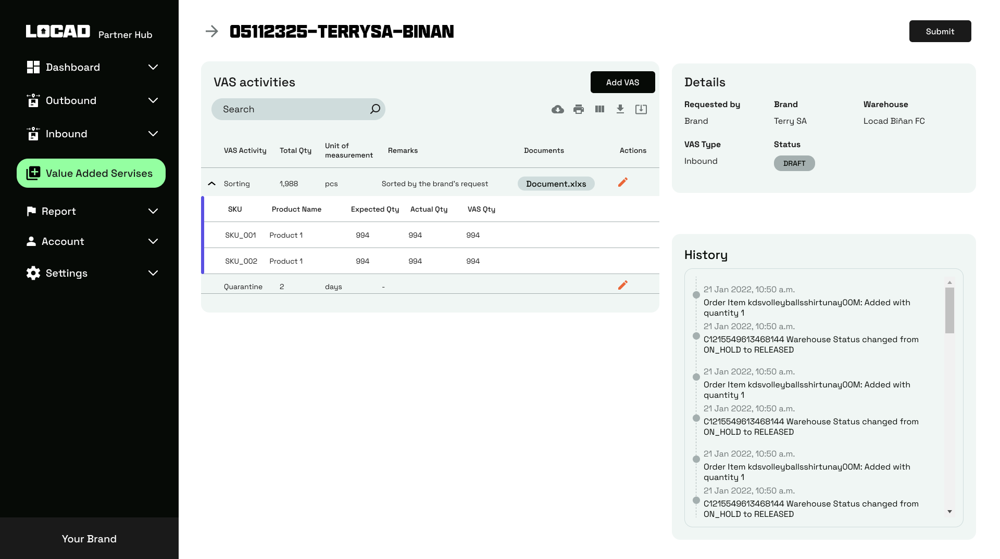
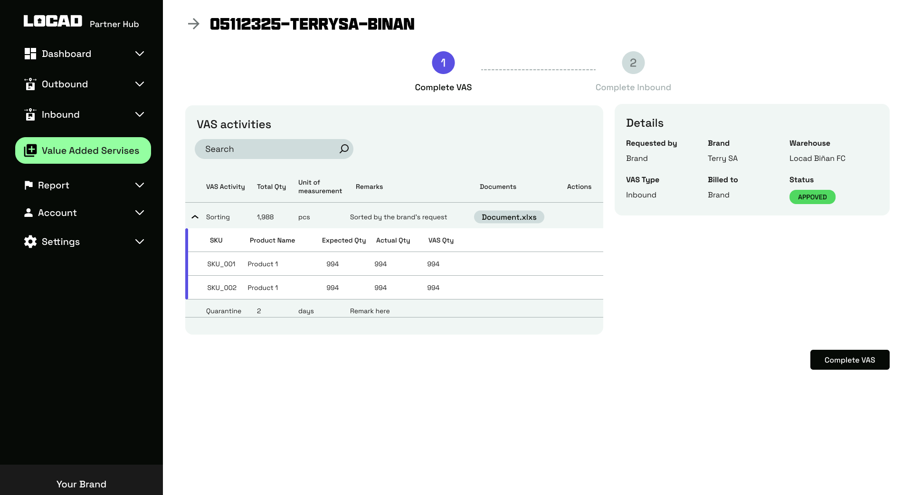

Locad Value Added Services Module
- Category: Product Management
- Company: Locad
- Company Website: https://golocad.com/
Background Information:
At Locad, we specialize in streamlining e-commerce order fulfillment across the Asia-Pacific. Our platform seamlessly synchronizes inventory and manages the entire process—from storing and packing to shipping and tracking orders across various online channels. With warehouses and carriers strategically located across multiple countries, we empower brands to stock goods closer to their customers, resulting in faster delivery times and reduced costs. As the product manager overseeing warehouse operations, my focus is on driving product initiatives aimed at optimizing processes to enhance stakeholder satisfaction and drive operational efficiency.
Problem Statement:
One of the major pain points in warehouse operations is the tracking, approval, and billing of value-added services (VAS). These services, which are not part of the original contract with Locad, are essential for fulfilling specific merchant needs. For instance, one common VAS activity is labeling, where products delivered to the warehouse lack barcodes or labels and need to be appropriately tagged for storage. Similarly, bundling, where merchants request to combine two products into one, is also considered a value-added service.
Currently, the process for managing VAS involves using a Google spreadsheet accessible to all parties involved to track and approve requests. However, this method presents several challenges, notably the risk of inaccuracies in tracking and billing. With multiple stakeholders accessing and updating the spreadsheet, there's a heightened risk of errors, such as missing or duplicate entries, leading to VAS not being properly tracked or billed. This could result in revenue loss for Locad and dissatisfaction among merchants due to inconsistencies in billing for the services provided.
Solution:
A dedicated VAS module accessible to all relevant stakeholders, facilitating efficient creation, tracking, approval, and management of VAS requests. This streamlined approach optimizes operations and guarantees precise billing accuracy.
Product Preview
VAS submission and review
Users can add activities, quantities, supporting documents, and remarks before submitting the request. The screen also displays its current status and activity history.
{kind=link}

VAS completion and verification
Warehouse users record actual completed quantities before completing the VAS workflow, helping maintain accurate operational and billing records.
{kind=link}
